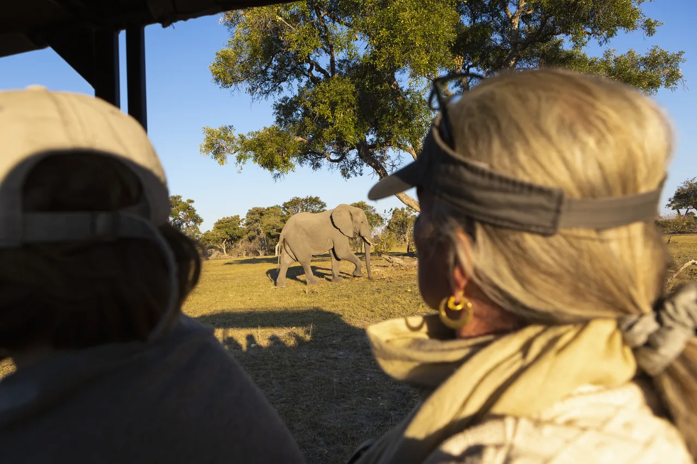
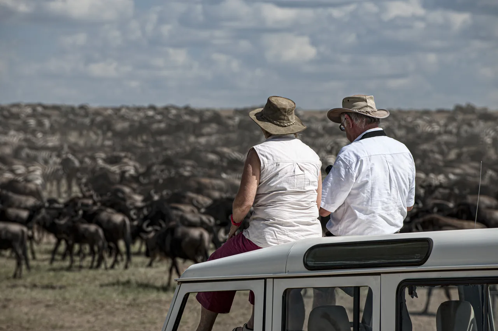
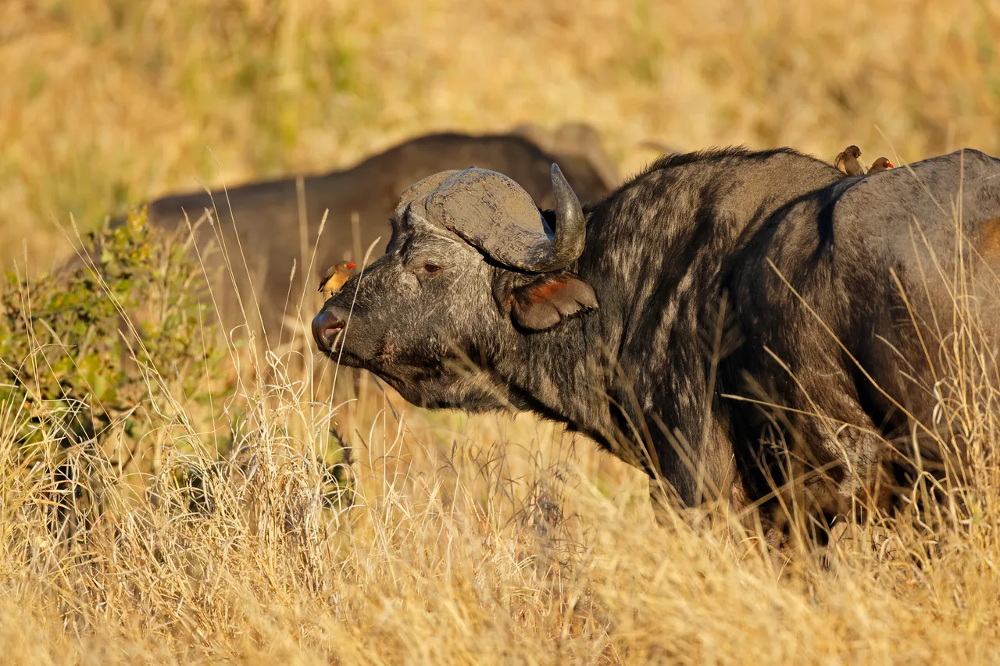
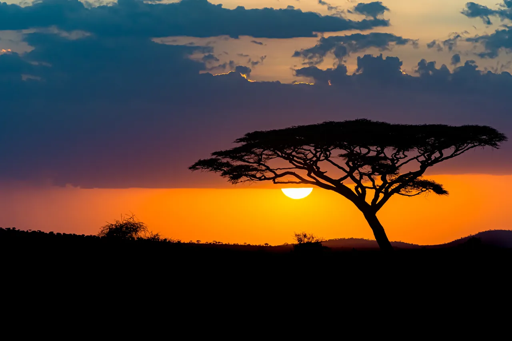
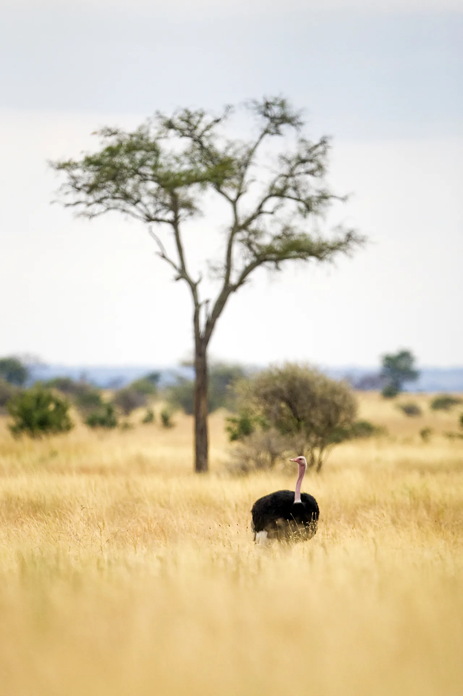
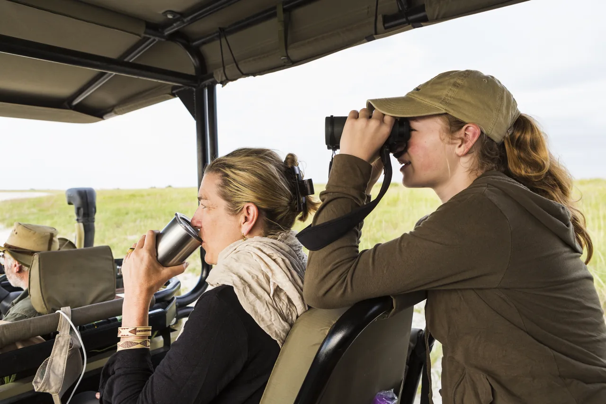

Northern Tanzania
Private safaris · Northern Tanzania
Find your
Find your
wild.
Unhurried journeys through the Serengeti, Ngorongoro and beyond. Guided by people who know where to look, and when to simply wait.
Wild Within
Discovery begins in the detail. In the flick of an ear above the long grass, the hush before a river crossing, the dust that rises behind a moving herd. We design journeys that leave room for those moments, and for the wild within you to answer.
29Crafted journeys
9Wild destinations
100%Private safaris
4×4Pop-up roof Land Cruisers

The Wildara W
Some things are only seen by those who look closer.
01 · The foxCuriosity
Hidden in our W, the fox reminds us to observe. The patient art of noticing what others pass by.
02 · The trunkMemory & strength
The elephant carries the memory of the land. Journeys built on connection, care and quiet confidence.
03 · The flowMovement
The sweep of the letter follows the land itself. Rivers, migrations and roads that bend toward wonder.
Ways into the wild
Every safari starts with a feeling.
Follow the thunder of the Great Migration, sit in silence with a pride of lions, or end with your toes in the Indian Ocean. Choose a feeling, and we will shape the journey around it.
01
 02
02
 03
04
03
04
The Great Migration
River crossings, calving plains and two million hooves in motion.
Big Cats & Big Five
Lion, leopard, elephant, buffalo and rhino, in their own time.
Bush & Beach
Savannah dust, then Stone Town alleys and turquoise tides.

Short Escapes
Two to four days. Tarangire, Manyara and the Crater, beautifully paced.
Nine ways to experience Tanzania, from dawn balloon flights to evenings with the Hadzabe.
Field notes · Chapter II06:12:04
The Watchers
The wild is watching too.
Early light in the Serengeti. Three lionesses read the wind long before we see what they see. Our guides teach you to read it with them.
Signature journeys
Itineraries with a story to tell.

12 daysGreat Migration
Majestic Great Migration Safari at Mara River Crossing
Tarangire, Central Serengeti, Northern Serengeti and Ngorongoro Crater
From$3,850 pp
7 daysBig Five
Amazing Big Five Wildlife
Tarangire, Ngorongoro, Serengeti and Lake Manyara
From$1,670 pp

10 daysGreat Migration
Great Migration Safari & Zanzibar Beach
Tarangire, Central Serengeti, Northern Serengeti and Ngorongoro Crater
From$1,800 pp

6 daysCulture
Wildlife Safari & Authentic African Culture
Tarangire, Serengeti, Lake Eyasi and Ngorongoro
From$1,790 pp
4 daysGreat Migration
Winter Great Migration during Calving Season
Ndutu Serengeti and Ngorongoro Crater
From$1,530 pp

5 daysMid-range
Beauty of Serengeti & Ngorongoro
Serengeti and Ngorongoro Crater
From$1,350 pp
9 daysBush & Beach
Tanzania Safari & Zanzibar Shore
Tarangire, Serengeti, Ngorongoro, Manyara & Zanzibar
From$2,370 pp

3 daysPrivate safari
Smart Serengeti and Ngorongoro Adventure
Serengeti and Ngorongoro Crater
From$1,150 pp
Not sure where to start?
Talk to a safari specialist in Arusha.
Share your dates and dreams. We reply with honest advice and a tailored proposal, usually within one working day. No obligation.
When to go
Twelve months, twelve different safaris.
Tanzania rewards every season. Choose a month to see where the herds are, what the land is doing, and which journey fits.
Migration highlight Bar height: game viewing
Serengeti
Our approach

Adventurous in spirit. Considered in every detail.
Every Wildara journey is private and shaped around you. No crowded minibuses, no rushed checklists. Just the wild, a great guide, and time.
i.
Private, from first to last
Your own vehicle, your own pace and an itinerary you can change as the wild unfolds. Linger at a sighting for as long as it holds you.
ii.
4×4 Land Cruisers with pop-up roofs
Stand tall for a 360° view, with binoculars, charging points and cool mineral water always on board.
iii.
Professional English-speaking guides
Trackers, storytellers and patient hosts who know these plains intimately, and know exactly when to switch off the engine.
iv.
Carefully chosen lodges and camps
From warm Karatu lodges to tented camps in the heart of the Serengeti, full board, with picnic lunches out on the plains.
v.
Clear, all-inclusive pricing
Park fees, crater fees, transfers, taxes and game drives included in every quote. No surprises at the gate.
Field journal
Moments from the field.
Quiet, observant moments. Look carefully: not everything here is what it first appears.






Safari Journal
Visit the Safari Journal Read before you go.
 Planning
PlanningThe Best Time to Visit Tanzania: A Month by Month Guide
Dry season or green season, calving or river crossings? Our month by month guide explains what each part of the Tanzanian year brings, from wildlife and weather to crowds and prices.
ReadParks & wildlifeThe Great Migration Month by Month
Where are the herds in March, or in August? Follow the wildebeest migration through the Serengeti year, from calving on the southern plains to crossings on the Mara River and the long journey home.
ReadPractical
What to Pack for a Tanzania Safari
Neutral colours, warm layers and a soft bag that fits a light aircraft: our practical packing guide covers clothing, binoculars, cameras, power and the small comforts that make long days in the bush easier.
Read
Begin here
Your journey starts with a conversation.
Tell us what draws you to Africa. We will help you shape the next step, with an honest, tailored proposal and no obligation.